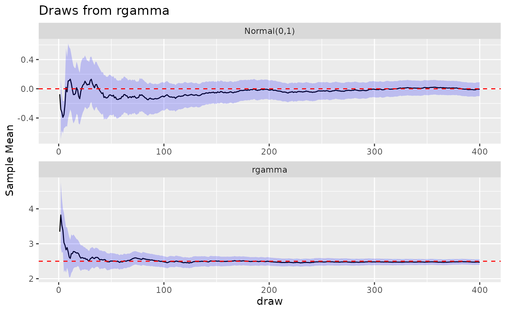
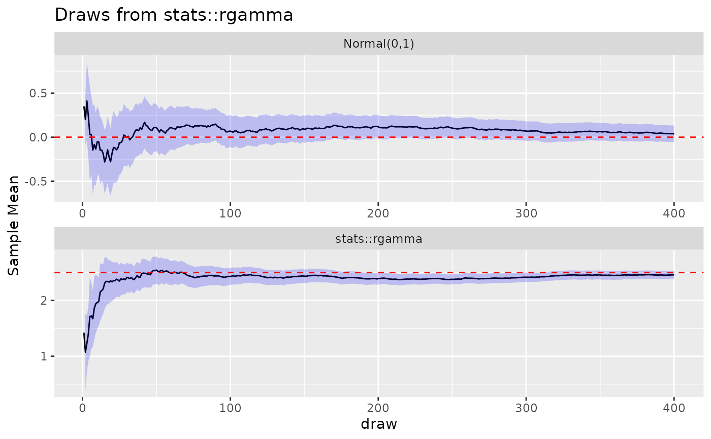
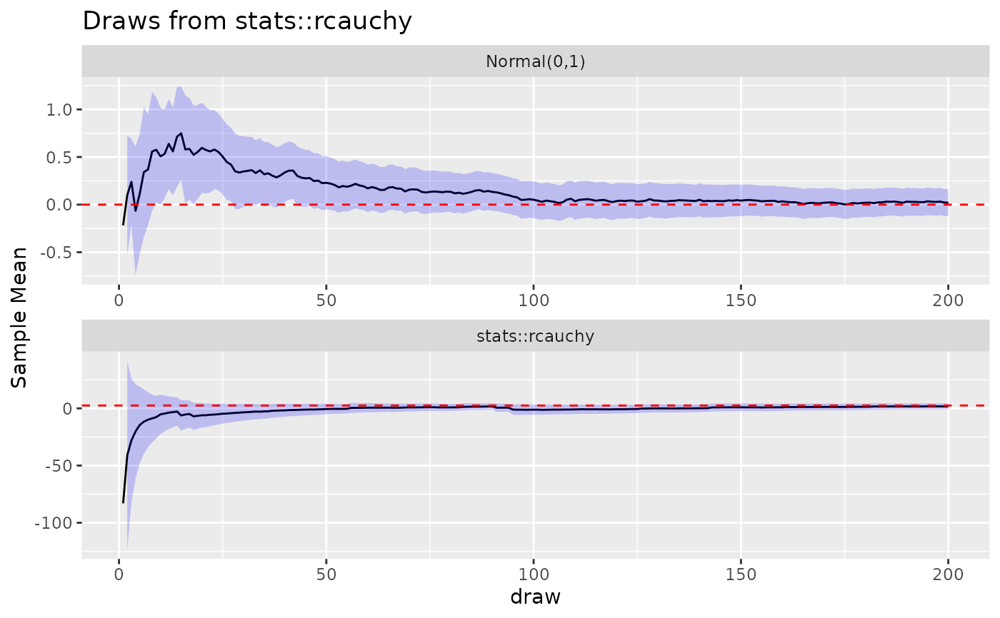
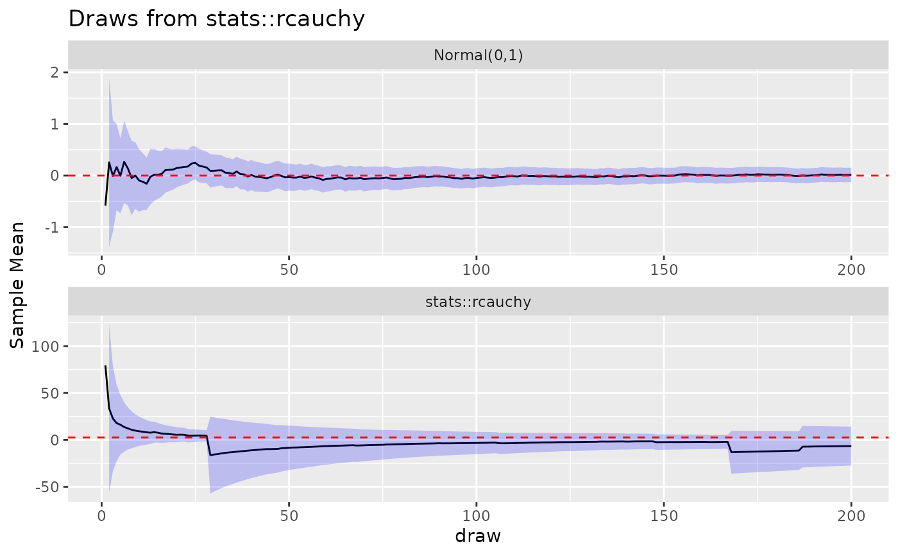

Visualize the behavior of the Law of Large Numbers with a given function compared to a normal distribution.
Source:R/lln.R
draw_lln_with_func_facet.RdVisualize the behavior of the Law of Large Numbers with a given function compared to a normal distribution.
Arguments
- animate
Whether the returned plot should animate the draws
- n
The number of draws to be made
- theoretical_mean
The theoretical mean of the function
- random_function
The function from which samples are to be drawn
- ...
Additional arguments to pass to the random function
Examples
draw_lln_with_func_facet(
animate = FALSE, n = 400,
theoretical_mean = 2.5, rgamma, shape = 10, scale = 0.25
)

draw_lln_with_func_facet(
animate = FALSE, n = 400,
theoretical_mean = 2.5, stats::rgamma, shape = 10, scale = 0.25
)

draw_lln_with_func_facet(
animate = FALSE, n = 200,
theoretical_mean = 2.5, stats::rcauchy, location = 2.5, scale = 2
)

draw_lln_with_func_facet(
animate = FALSE, n = 200,
theoretical_mean = 2.5, stats::rcauchy, location = 2.5, scale = 2
)

draw_lln_with_func_facet(
animate = TRUE, n = 200,
theoretical_mean = 2.5, stats::rcauchy, location = 2.5, scale = 2
)
#> `geom_line()`: Each group consists of only one observation.
#> ℹ Do you need to adjust the group aesthetic?
#> `geom_line()`: Each group consists of only one observation.
#> ℹ Do you need to adjust the group aesthetic?
#> `geom_line()`: Each group consists of only one observation.
#> ℹ Do you need to adjust the group aesthetic?
#> `geom_line()`: Each group consists of only one observation.
#> ℹ Do you need to adjust the group aesthetic?
#> [1] "./gganim_plot0001.png" "./gganim_plot0002.png" "./gganim_plot0003.png"
#> [4] "./gganim_plot0004.png" "./gganim_plot0005.png" "./gganim_plot0006.png"
#> [7] "./gganim_plot0007.png" "./gganim_plot0008.png" "./gganim_plot0009.png"
#> [10] "./gganim_plot0010.png" "./gganim_plot0011.png" "./gganim_plot0012.png"
#> [13] "./gganim_plot0013.png" "./gganim_plot0014.png" "./gganim_plot0015.png"
#> [16] "./gganim_plot0016.png" "./gganim_plot0017.png" "./gganim_plot0018.png"
#> [19] "./gganim_plot0019.png" "./gganim_plot0020.png" "./gganim_plot0021.png"
#> [22] "./gganim_plot0022.png" "./gganim_plot0023.png" "./gganim_plot0024.png"
#> [25] "./gganim_plot0025.png" "./gganim_plot0026.png" "./gganim_plot0027.png"
#> [28] "./gganim_plot0028.png" "./gganim_plot0029.png" "./gganim_plot0030.png"
#> [31] "./gganim_plot0031.png" "./gganim_plot0032.png" "./gganim_plot0033.png"
#> [34] "./gganim_plot0034.png" "./gganim_plot0035.png" "./gganim_plot0036.png"
#> [37] "./gganim_plot0037.png" "./gganim_plot0038.png" "./gganim_plot0039.png"
#> [40] "./gganim_plot0040.png" "./gganim_plot0041.png" "./gganim_plot0042.png"
#> [43] "./gganim_plot0043.png" "./gganim_plot0044.png" "./gganim_plot0045.png"
#> [46] "./gganim_plot0046.png" "./gganim_plot0047.png" "./gganim_plot0048.png"
#> [49] "./gganim_plot0049.png" "./gganim_plot0050.png" "./gganim_plot0051.png"
#> [52] "./gganim_plot0052.png" "./gganim_plot0053.png" "./gganim_plot0054.png"
#> [55] "./gganim_plot0055.png" "./gganim_plot0056.png" "./gganim_plot0057.png"
#> [58] "./gganim_plot0058.png" "./gganim_plot0059.png" "./gganim_plot0060.png"
#> [61] "./gganim_plot0061.png" "./gganim_plot0062.png" "./gganim_plot0063.png"
#> [64] "./gganim_plot0064.png" "./gganim_plot0065.png" "./gganim_plot0066.png"
#> [67] "./gganim_plot0067.png" "./gganim_plot0068.png" "./gganim_plot0069.png"
#> [70] "./gganim_plot0070.png" "./gganim_plot0071.png" "./gganim_plot0072.png"
#> [73] "./gganim_plot0073.png" "./gganim_plot0074.png" "./gganim_plot0075.png"
#> [76] "./gganim_plot0076.png" "./gganim_plot0077.png" "./gganim_plot0078.png"
#> [79] "./gganim_plot0079.png" "./gganim_plot0080.png" "./gganim_plot0081.png"
#> [82] "./gganim_plot0082.png" "./gganim_plot0083.png" "./gganim_plot0084.png"
#> [85] "./gganim_plot0085.png" "./gganim_plot0086.png" "./gganim_plot0087.png"
#> [88] "./gganim_plot0088.png" "./gganim_plot0089.png" "./gganim_plot0090.png"
#> [91] "./gganim_plot0091.png" "./gganim_plot0092.png" "./gganim_plot0093.png"
#> [94] "./gganim_plot0094.png" "./gganim_plot0095.png" "./gganim_plot0096.png"
#> [97] "./gganim_plot0097.png" "./gganim_plot0098.png" "./gganim_plot0099.png"
#> [100] "./gganim_plot0100.png"
#> attr(,"frame_vars")
#> frame nframes progress frame_along
#> 1 1 100 0.01 1
#> 2 2 100 0.02 3
#> 3 3 100 0.03 5
#> 4 4 100 0.04 7
#> 5 5 100 0.05 9
#> 6 6 100 0.06 11
#> 7 7 100 0.07 13
#> 8 8 100 0.08 15
#> 9 9 100 0.09 17
#> 10 10 100 0.10 19
#> 11 11 100 0.11 21
#> 12 12 100 0.12 23
#> 13 13 100 0.13 25
#> 14 14 100 0.14 27
#> 15 15 100 0.15 29
#> 16 16 100 0.16 31
#> 17 17 100 0.17 33
#> 18 18 100 0.18 35
#> 19 19 100 0.19 37
#> 20 20 100 0.20 39
#> 21 21 100 0.21 41
#> 22 22 100 0.22 43
#> 23 23 100 0.23 45
#> 24 24 100 0.24 47
#> 25 25 100 0.25 49
#> 26 26 100 0.26 51
#> 27 27 100 0.27 53
#> 28 28 100 0.28 55
#> 29 29 100 0.29 57
#> 30 30 100 0.30 59
#> 31 31 100 0.31 61
#> 32 32 100 0.32 63
#> 33 33 100 0.33 65
#> 34 34 100 0.34 67
#> 35 35 100 0.35 69
#> 36 36 100 0.36 71
#> 37 37 100 0.37 73
#> 38 38 100 0.38 75
#> 39 39 100 0.39 77
#> 40 40 100 0.40 79
#> 41 41 100 0.41 81
#> 42 42 100 0.42 83
#> 43 43 100 0.43 85
#> 44 44 100 0.44 87
#> 45 45 100 0.45 89
#> 46 46 100 0.46 91
#> 47 47 100 0.47 93
#> 48 48 100 0.48 95
#> 49 49 100 0.49 97
#> 50 50 100 0.50 99
#> 51 51 100 0.51 102
#> 52 52 100 0.52 104
#> 53 53 100 0.53 106
#> 54 54 100 0.54 108
#> 55 55 100 0.55 110
#> 56 56 100 0.56 112
#> 57 57 100 0.57 114
#> 58 58 100 0.58 116
#> 59 59 100 0.59 118
#> 60 60 100 0.60 120
#> 61 61 100 0.61 122
#> 62 62 100 0.62 124
#> 63 63 100 0.63 126
#> 64 64 100 0.64 128
#> 65 65 100 0.65 130
#> 66 66 100 0.66 132
#> 67 67 100 0.67 134
#> 68 68 100 0.68 136
#> 69 69 100 0.69 138
#> 70 70 100 0.70 140
#> 71 71 100 0.71 142
#> 72 72 100 0.72 144
#> 73 73 100 0.73 146
#> 74 74 100 0.74 148
#> 75 75 100 0.75 150
#> 76 76 100 0.76 152
#> 77 77 100 0.77 154
#> 78 78 100 0.78 156
#> 79 79 100 0.79 158
#> 80 80 100 0.80 160
#> 81 81 100 0.81 162
#> 82 82 100 0.82 164
#> 83 83 100 0.83 166
#> 84 84 100 0.84 168
#> 85 85 100 0.85 170
#> 86 86 100 0.86 172
#> 87 87 100 0.87 174
#> 88 88 100 0.88 176
#> 89 89 100 0.89 178
#> 90 90 100 0.90 180
#> 91 91 100 0.91 182
#> 92 92 100 0.92 184
#> 93 93 100 0.93 186
#> 94 94 100 0.94 188
#> 95 95 100 0.95 190
#> 96 96 100 0.96 192
#> 97 97 100 0.97 194
#> 98 98 100 0.98 196
#> 99 99 100 0.99 198
#> 100 100 100 1.00 200
#> frame_source
#> 1 /tmp/RtmpmEEOvR/178f5ed7b47b/gganim_plot0001.png
#> 2 /tmp/RtmpmEEOvR/178f5ed7b47b/gganim_plot0002.png
#> 3 /tmp/RtmpmEEOvR/178f5ed7b47b/gganim_plot0003.png
#> 4 /tmp/RtmpmEEOvR/178f5ed7b47b/gganim_plot0004.png
#> 5 /tmp/RtmpmEEOvR/178f5ed7b47b/gganim_plot0005.png
#> 6 /tmp/RtmpmEEOvR/178f5ed7b47b/gganim_plot0006.png
#> 7 /tmp/RtmpmEEOvR/178f5ed7b47b/gganim_plot0007.png
#> 8 /tmp/RtmpmEEOvR/178f5ed7b47b/gganim_plot0008.png
#> 9 /tmp/RtmpmEEOvR/178f5ed7b47b/gganim_plot0009.png
#> 10 /tmp/RtmpmEEOvR/178f5ed7b47b/gganim_plot0010.png
#> 11 /tmp/RtmpmEEOvR/178f5ed7b47b/gganim_plot0011.png
#> 12 /tmp/RtmpmEEOvR/178f5ed7b47b/gganim_plot0012.png
#> 13 /tmp/RtmpmEEOvR/178f5ed7b47b/gganim_plot0013.png
#> 14 /tmp/RtmpmEEOvR/178f5ed7b47b/gganim_plot0014.png
#> 15 /tmp/RtmpmEEOvR/178f5ed7b47b/gganim_plot0015.png
#> 16 /tmp/RtmpmEEOvR/178f5ed7b47b/gganim_plot0016.png
#> 17 /tmp/RtmpmEEOvR/178f5ed7b47b/gganim_plot0017.png
#> 18 /tmp/RtmpmEEOvR/178f5ed7b47b/gganim_plot0018.png
#> 19 /tmp/RtmpmEEOvR/178f5ed7b47b/gganim_plot0019.png
#> 20 /tmp/RtmpmEEOvR/178f5ed7b47b/gganim_plot0020.png
#> 21 /tmp/RtmpmEEOvR/178f5ed7b47b/gganim_plot0021.png
#> 22 /tmp/RtmpmEEOvR/178f5ed7b47b/gganim_plot0022.png
#> 23 /tmp/RtmpmEEOvR/178f5ed7b47b/gganim_plot0023.png
#> 24 /tmp/RtmpmEEOvR/178f5ed7b47b/gganim_plot0024.png
#> 25 /tmp/RtmpmEEOvR/178f5ed7b47b/gganim_plot0025.png
#> 26 /tmp/RtmpmEEOvR/178f5ed7b47b/gganim_plot0026.png
#> 27 /tmp/RtmpmEEOvR/178f5ed7b47b/gganim_plot0027.png
#> 28 /tmp/RtmpmEEOvR/178f5ed7b47b/gganim_plot0028.png
#> 29 /tmp/RtmpmEEOvR/178f5ed7b47b/gganim_plot0029.png
#> 30 /tmp/RtmpmEEOvR/178f5ed7b47b/gganim_plot0030.png
#> 31 /tmp/RtmpmEEOvR/178f5ed7b47b/gganim_plot0031.png
#> 32 /tmp/RtmpmEEOvR/178f5ed7b47b/gganim_plot0032.png
#> 33 /tmp/RtmpmEEOvR/178f5ed7b47b/gganim_plot0033.png
#> 34 /tmp/RtmpmEEOvR/178f5ed7b47b/gganim_plot0034.png
#> 35 /tmp/RtmpmEEOvR/178f5ed7b47b/gganim_plot0035.png
#> 36 /tmp/RtmpmEEOvR/178f5ed7b47b/gganim_plot0036.png
#> 37 /tmp/RtmpmEEOvR/178f5ed7b47b/gganim_plot0037.png
#> 38 /tmp/RtmpmEEOvR/178f5ed7b47b/gganim_plot0038.png
#> 39 /tmp/RtmpmEEOvR/178f5ed7b47b/gganim_plot0039.png
#> 40 /tmp/RtmpmEEOvR/178f5ed7b47b/gganim_plot0040.png
#> 41 /tmp/RtmpmEEOvR/178f5ed7b47b/gganim_plot0041.png
#> 42 /tmp/RtmpmEEOvR/178f5ed7b47b/gganim_plot0042.png
#> 43 /tmp/RtmpmEEOvR/178f5ed7b47b/gganim_plot0043.png
#> 44 /tmp/RtmpmEEOvR/178f5ed7b47b/gganim_plot0044.png
#> 45 /tmp/RtmpmEEOvR/178f5ed7b47b/gganim_plot0045.png
#> 46 /tmp/RtmpmEEOvR/178f5ed7b47b/gganim_plot0046.png
#> 47 /tmp/RtmpmEEOvR/178f5ed7b47b/gganim_plot0047.png
#> 48 /tmp/RtmpmEEOvR/178f5ed7b47b/gganim_plot0048.png
#> 49 /tmp/RtmpmEEOvR/178f5ed7b47b/gganim_plot0049.png
#> 50 /tmp/RtmpmEEOvR/178f5ed7b47b/gganim_plot0050.png
#> 51 /tmp/RtmpmEEOvR/178f5ed7b47b/gganim_plot0051.png
#> 52 /tmp/RtmpmEEOvR/178f5ed7b47b/gganim_plot0052.png
#> 53 /tmp/RtmpmEEOvR/178f5ed7b47b/gganim_plot0053.png
#> 54 /tmp/RtmpmEEOvR/178f5ed7b47b/gganim_plot0054.png
#> 55 /tmp/RtmpmEEOvR/178f5ed7b47b/gganim_plot0055.png
#> 56 /tmp/RtmpmEEOvR/178f5ed7b47b/gganim_plot0056.png
#> 57 /tmp/RtmpmEEOvR/178f5ed7b47b/gganim_plot0057.png
#> 58 /tmp/RtmpmEEOvR/178f5ed7b47b/gganim_plot0058.png
#> 59 /tmp/RtmpmEEOvR/178f5ed7b47b/gganim_plot0059.png
#> 60 /tmp/RtmpmEEOvR/178f5ed7b47b/gganim_plot0060.png
#> 61 /tmp/RtmpmEEOvR/178f5ed7b47b/gganim_plot0061.png
#> 62 /tmp/RtmpmEEOvR/178f5ed7b47b/gganim_plot0062.png
#> 63 /tmp/RtmpmEEOvR/178f5ed7b47b/gganim_plot0063.png
#> 64 /tmp/RtmpmEEOvR/178f5ed7b47b/gganim_plot0064.png
#> 65 /tmp/RtmpmEEOvR/178f5ed7b47b/gganim_plot0065.png
#> 66 /tmp/RtmpmEEOvR/178f5ed7b47b/gganim_plot0066.png
#> 67 /tmp/RtmpmEEOvR/178f5ed7b47b/gganim_plot0067.png
#> 68 /tmp/RtmpmEEOvR/178f5ed7b47b/gganim_plot0068.png
#> 69 /tmp/RtmpmEEOvR/178f5ed7b47b/gganim_plot0069.png
#> 70 /tmp/RtmpmEEOvR/178f5ed7b47b/gganim_plot0070.png
#> 71 /tmp/RtmpmEEOvR/178f5ed7b47b/gganim_plot0071.png
#> 72 /tmp/RtmpmEEOvR/178f5ed7b47b/gganim_plot0072.png
#> 73 /tmp/RtmpmEEOvR/178f5ed7b47b/gganim_plot0073.png
#> 74 /tmp/RtmpmEEOvR/178f5ed7b47b/gganim_plot0074.png
#> 75 /tmp/RtmpmEEOvR/178f5ed7b47b/gganim_plot0075.png
#> 76 /tmp/RtmpmEEOvR/178f5ed7b47b/gganim_plot0076.png
#> 77 /tmp/RtmpmEEOvR/178f5ed7b47b/gganim_plot0077.png
#> 78 /tmp/RtmpmEEOvR/178f5ed7b47b/gganim_plot0078.png
#> 79 /tmp/RtmpmEEOvR/178f5ed7b47b/gganim_plot0079.png
#> 80 /tmp/RtmpmEEOvR/178f5ed7b47b/gganim_plot0080.png
#> 81 /tmp/RtmpmEEOvR/178f5ed7b47b/gganim_plot0081.png
#> 82 /tmp/RtmpmEEOvR/178f5ed7b47b/gganim_plot0082.png
#> 83 /tmp/RtmpmEEOvR/178f5ed7b47b/gganim_plot0083.png
#> 84 /tmp/RtmpmEEOvR/178f5ed7b47b/gganim_plot0084.png
#> 85 /tmp/RtmpmEEOvR/178f5ed7b47b/gganim_plot0085.png
#> 86 /tmp/RtmpmEEOvR/178f5ed7b47b/gganim_plot0086.png
#> 87 /tmp/RtmpmEEOvR/178f5ed7b47b/gganim_plot0087.png
#> 88 /tmp/RtmpmEEOvR/178f5ed7b47b/gganim_plot0088.png
#> 89 /tmp/RtmpmEEOvR/178f5ed7b47b/gganim_plot0089.png
#> 90 /tmp/RtmpmEEOvR/178f5ed7b47b/gganim_plot0090.png
#> 91 /tmp/RtmpmEEOvR/178f5ed7b47b/gganim_plot0091.png
#> 92 /tmp/RtmpmEEOvR/178f5ed7b47b/gganim_plot0092.png
#> 93 /tmp/RtmpmEEOvR/178f5ed7b47b/gganim_plot0093.png
#> 94 /tmp/RtmpmEEOvR/178f5ed7b47b/gganim_plot0094.png
#> 95 /tmp/RtmpmEEOvR/178f5ed7b47b/gganim_plot0095.png
#> 96 /tmp/RtmpmEEOvR/178f5ed7b47b/gganim_plot0096.png
#> 97 /tmp/RtmpmEEOvR/178f5ed7b47b/gganim_plot0097.png
#> 98 /tmp/RtmpmEEOvR/178f5ed7b47b/gganim_plot0098.png
#> 99 /tmp/RtmpmEEOvR/178f5ed7b47b/gganim_plot0099.png
#> 100 /tmp/RtmpmEEOvR/178f5ed7b47b/gganim_plot0100.png